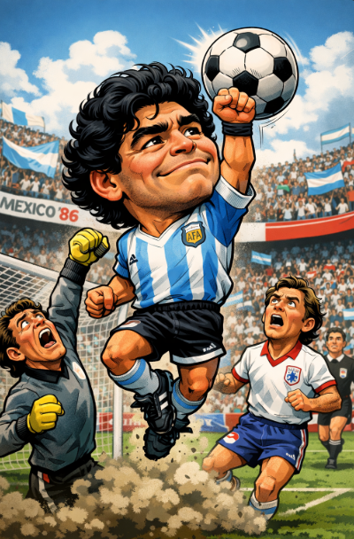

Diego Armando Maradona: el genio eterno del fútbol
Inicios
Diego Armando Maradona nació en Villa Fiorito, Argentina, en un entorno humilde donde el fútbol fue mucho más que un juego: fue una salida, una ilusión y un destino. Desde niño mostró una habilidad sobrenatural con el balón, debutando en la primera división argentina con apenas 15 años. Su talento era tan evidente que rápidamente se convirtió en símbolo de esperanza para millones.
Trayectoria en clubes
- Argentinos Juniors: El club donde el mundo descubrió a un talento irrepetible.
- Boca Juniors: Ídolo absoluto y campeón, conexión eterna con la hinchada.
- FC Barcelona: Una etapa marcada por el talento, la polémica y la intensidad.
- Napoli: El capítulo más legendario de su carrera, donde llevó a un club humilde a la cima del fútbol italiano y europeo.
- Sevilla y Newell’s Old Boys: El cierre de una carrera que ya era historia.
Logros y reconocimientos
Maradona no solo ganó títulos, dejó momentos imborrables:
- Campeón del Mundo 1986 (Argentina)
- Subcampeón del Mundo 1990
- 2 Scudettos con el Napoli
- Ídolo máximo en la historia del Napoli
- Autor del “Gol del Siglo” y la “Mano de Dios”
Su actuación en el Mundial de 1986 es considerada una de las mayores exhibiciones individuales en la historia del fútbol.
Impacto económico y cultural
Maradona trascendió el fútbol para convertirse en un fenómeno cultural y social. Su imagen representó rebeldía, pasión y talento puro. Aunque no alcanzó las cifras económicas del fútbol moderno, su valor simbólico y emocional es incalculable, especialmente en Argentina y Nápoles.
Estilo de juego
Zurda mágica, control absoluto del balón, visión extraordinaria y una personalidad arrolladora. Maradona jugaba como si el balón fuera una extensión de su cuerpo. Capaz de cambiar partidos y escribir historia en segundos, fue el ejemplo máximo del fútbol como arte.